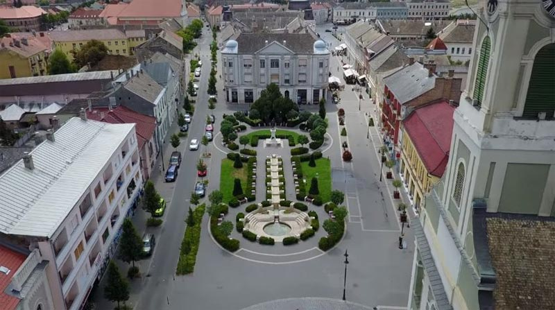
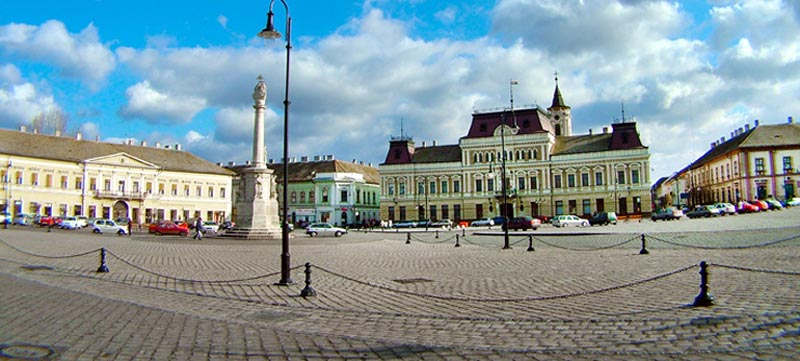
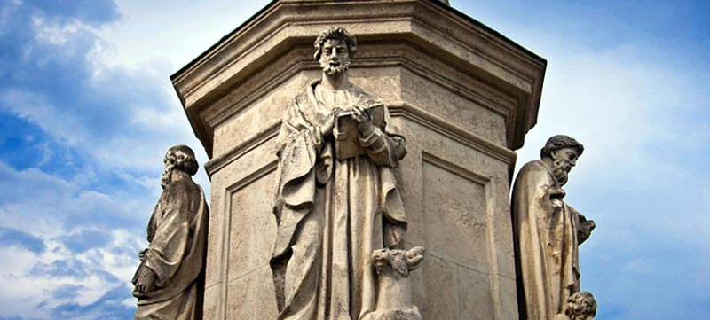
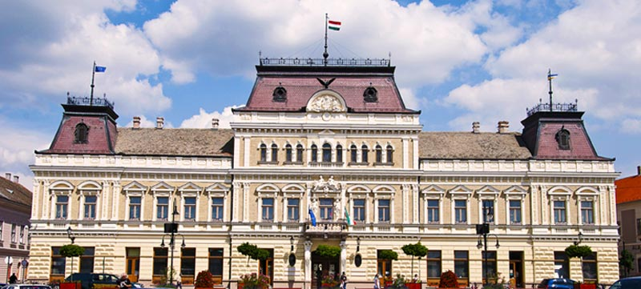
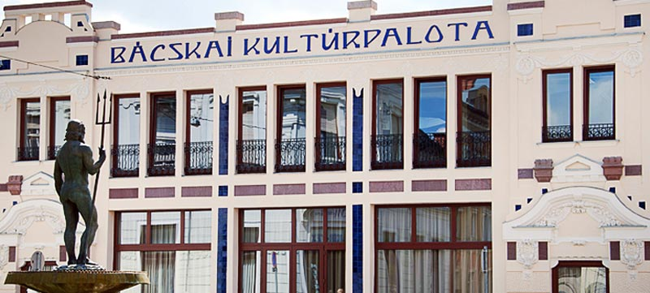
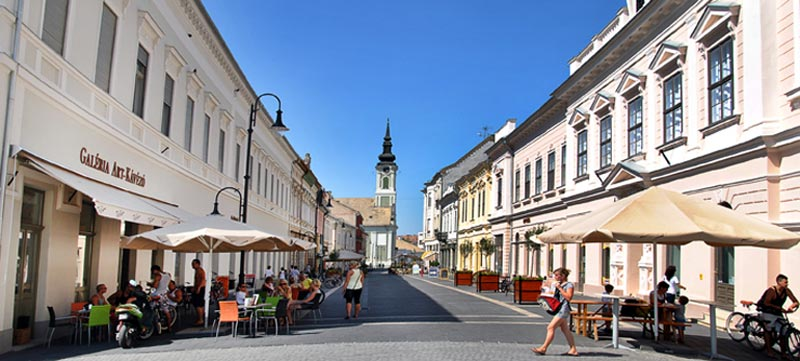
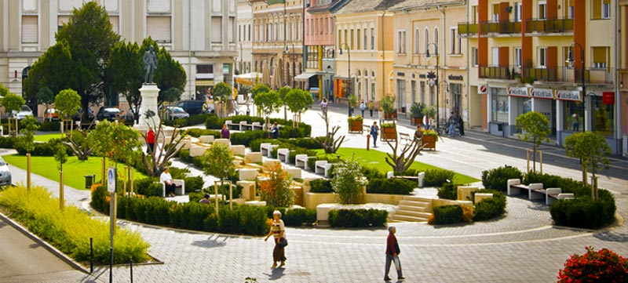
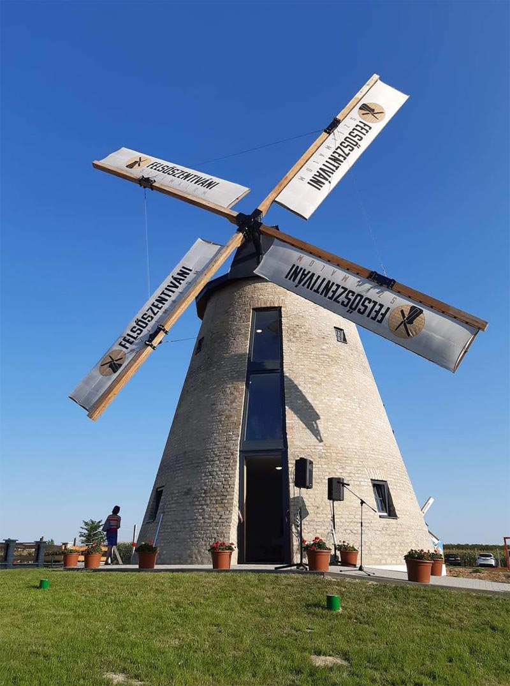

【美景】
包姚自1968年以来，一直是多瑙河民俗节的场地之一。
包姚鱼汤是匈牙利最正宗的鱼汤之一。
每年7月的第二个星期六，成千上万的人来这里品尝包姚鱼汤。
包姚约有四十座具有城市景观意义的古迹和建筑物。
【美食】
Goulash牛肉炖汤
Libamáj 鹅肝
Lángos特色油饼
Toltott Kaposzta 圆白菜肉丸
Halászlé 鱼汤
Ujhazi Tyukhuslevesi 家常老鸡汤
Kurtoskalacs 烟囱卷面包
Egri Bikavér埃格尔公牛血葡萄酒
包姚 包姚是位于匈牙利南部多瑙河畔的一座城市，面积177平方公里，人口近4万，是主要的港口城市和交通枢纽。 这里在史前时期就已经有人居住。1839年，该市开始进行匈牙利语教育。从1873年开始，它就拥有了立法权。1886年，建立了一家煤气厂。电话网络于1892年建成。在1918年，它被塞尔维亚占领。今天，这里有制造厂，主要有制粉业、皮革业、纺织业、木材业和建筑业，但食品业也很发达。自1968年以来，它一直是多瑙河民俗节的场地之一。自1996年以来，每年7月的第二个星期六，都举行包姚民俗节-包姚鱼烹饪节，成千上万的人来这里品尝传统有名的包姚鱼汤。 市中心的两个教堂：圣彼得教堂和圣保罗教堂。多瑙河及其支流苏戈维察吸引了许多水上运动、短途旅行和钓鱼爱好者。在将近四万居民的这座城市中，大约有四十座具有城市景观意义的古迹和建筑物，几个世纪以来一直是匈牙利、德国、塞尔维亚和克罗地亚民族的家园。 
景点：圣三一广场及圣三一雕像 圣三一广场是坐落于包姚主广场上的文艺复兴时期的建筑，类似于威尼斯的圣马克广场。最吸引游客的古迹之一是四叶草形的正方形，其西侧可欣赏对面的裴多菲岛的美丽景色。历史建筑中设有许多旅馆、商店、咖啡馆和旅游咨询处。广场上覆盖着独特的玄武岩块，曾经是市场和集市的场地，而今天则是举行城市节日和活动的地方。
 圣三一雕像位于圣三一广场的中间。它的建立是为了纪念1750年代袭击这座城市的大瘟疫。雕像在1881年进行了翻新并移至现在的位置。该雕像最初位于前格拉斯科维奇宫（今天的市政厅）的前面，直到1793年，当时的领主将该雕像移到了现在的位置。

景点：市政厅 如今的市政厅，即前巴洛克式格拉萨尔科维奇宫殿，新文艺复兴风格，坐落在圣三一广场上。从1750年到上个世纪末，这座城堡一直由格拉萨尔科维奇家族所有。在博物馆里可以看到美丽的壁炉，壁炉用红色大理石雕刻而成，并装饰有家庭徽章。楼梯上美丽的彩绘窗户描绘了亚当和夏娃。市政厅的庭院是夏季夜晚举行古典和轻音乐会的场所。

景点：巴奇凯文化宫 2011年5月，巴奇凯文化宫开幕。剧院和音乐厅设有各种节目，适用于音乐活动、室内剧院表演、观众会议、独奏之夜、演讲、颁奖典礼、会议和电影放映。它的展览厅和画廊为当地艺术家提供了自我介绍的机会，同时也为残疾人的工作提供了空间。

景点：市中心大街及卡尔曼广场 市中心大街作为历史悠久的市中心的一部分，在房屋底部经过精美装修的外墙，如今咖啡馆、冰淇淋店和商店的花园等着那些在鹅卵石长廊上行走的人。沿着这条街便会到达卡尔曼广场。广场上古老的单层野餐屋现在只是一块记忆，古老的发源地坐落在卡尔曼•托斯雕像后面的建筑物遗址上。
 卡尔曼广场位于市中心的是包姚出生的诗人和作家卡尔曼•托斯（1831-1881）的全长青铜雕像，这是1894年建造的。在这个广场上，还有观光小轮火车的站点。

景点：风车 风车建于19世纪中叶。1962年拆除帆后，该建筑开始用作仓库。由于2005年夏季的暴雨，风车被损坏。这之后发起了一项合作活动，以保护和重修建筑物。如今可以看到经过翻新的风车。

景点：巴洛克城堡 前大主教城堡是该县最古老的城堡，也是南部大平原地区第二古老的城堡。定居中心的宫殿由加洛克萨大主教加博尔•帕塔契奇伯爵于1739-1740年建造。巴洛克式建筑经过几处改动后形成了现在的样式。设有永久性和临时性展览，是一个保存完好的巴洛克式花园。